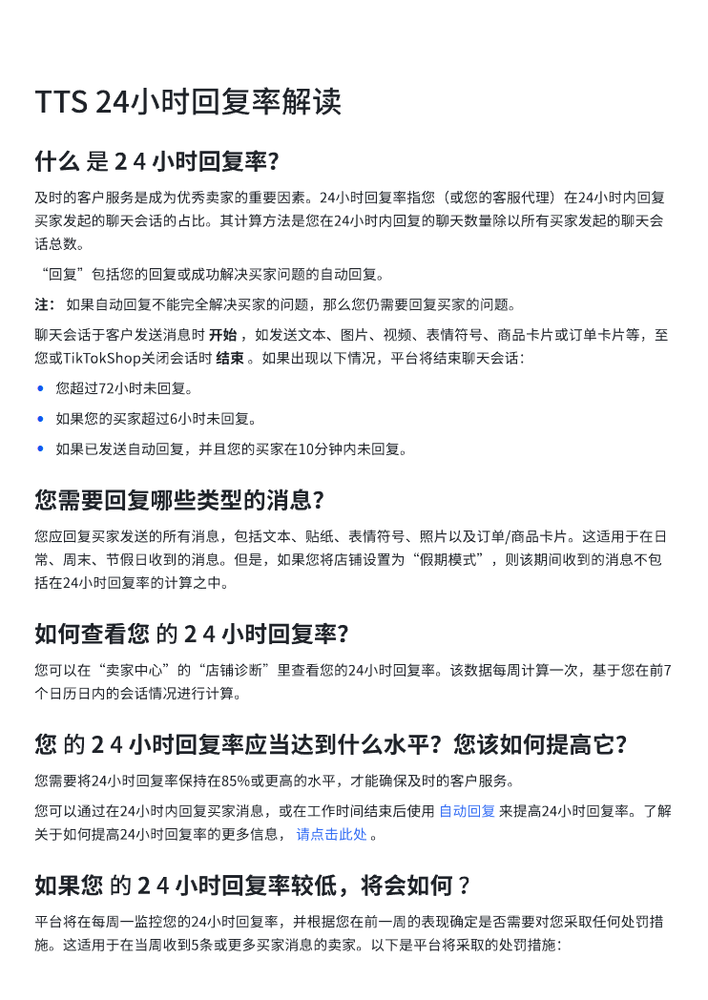
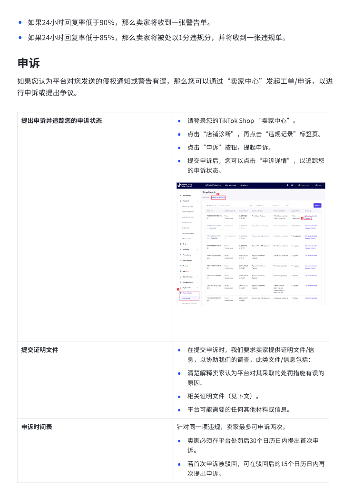
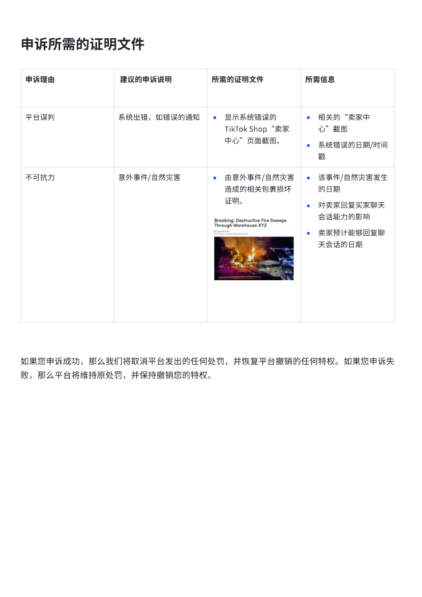

第 1 页

查看文字
TTS⟦U+0001⟧24小时回复率解读⟦U+0001⟧
什么⟦U+0001⟧是⟦U+0001⟧2⟦U+0001⟧4⟦U+0001⟧小时回复率？⟦U+0001⟧
及时的客戶服务是成为优秀卖家的重要因素。24小时回复率指您（或您的客服代理）在24小时内回复
买家发起的聊天会话的占比。其计算方法是您在24小时内回复的聊天数量除以所有买家发起的聊天会
话总数。
“回复”包括您的回复或成功解决买家问题的自动回复。
注：⟦U+0001⟧如果自动回复不能完全解决买家的问题，那么您仍需要回复买家的问题。⟦U+0001⟧
聊天会话于客戶发送消息时⟦U+0001⟧开始⟦U+0001⟧，如发送文本、图片、视频、表情符号、商品卡片或订单卡片等，至
您或TikTokShop关闭会话时⟦U+0001⟧结束⟦U+0001⟧。如果出现以下情况，平台将结束聊天会话：⟦U+0001⟧
•您超过72小时未回复。⟦U+0001⟧
•如果您的买家超过6小时未回复。⟦U+0001⟧
•如果已发送自动回复，并且您的买家在10分钟内未回复。⟦U+0001⟧
您需要回复哪些类型的消息？
您应回复买家发送的所有消息，包括文本、贴纸、表情符号、照片以及订单/商品卡片。这适用于在日
常、周末、节假日收到的消息。但是，如果您将店铺设置为“假期模式”，则该期间收到的消息不包
括在24小时回复率的计算之中。⟦U+0001⟧
如何查看您⟦U+0001⟧的⟦U+0001⟧2⟦U+0001⟧4⟦U+0001⟧小时回复率？⟦U+0001⟧
您可以在“卖家中心”的“店铺诊断”里查看您的24小时回复率。该数据每周计算一次，基于您在前7
个日历日内的会话情况进行计算。
您⟦U+0001⟧的⟦U+0001⟧2⟦U+0001⟧4⟦U+0001⟧小时回复率应当达到什么水平？您该如何提高它？⟦U+0001⟧
您需要将24小时回复率保持在85%或更高的水平，才能确保及时的客戶服务。⟦U+0001⟧
您可以通过在24小时内回复买家消息，或在工作时间结束后使用⟦U+0001⟧自动回复⟦U+0001⟧来提高24小时回复率。了解
关于如何提高24小时回复率的更多信息，⟦U+0001⟧请点击此处⟦U+0001⟧。⟦U+0001⟧
如果您⟦U+0001⟧的⟦U+0001⟧2⟦U+0001⟧4⟦U+0001⟧小时回复率较低，将会如何⟦U+0001⟧？⟦U+0001⟧
平台将在每周一监控您的24小时回复率，并根据您在前一周的表现确定是否需要对您采取任何处罚措
施。这适用于在当周收到5条或更多买家消息的卖家。以下是平台将采取的处罚措施：⟦U+0001⟧
第 2 页

查看文字
•如果24小时回复率低于90％，那么卖家将收到一张警告单。⟦U+0001⟧
•如果24小时回复率低于85％，那么卖家将被处以1分违规分，并将收到一张违规单。⟦U+0001⟧
申诉
如果您认为平台对您发送的侵权通知或警告有误，那么您可以通过“卖家中心”发起工单/申诉，以进
行申诉或提出争议。
提出申诉并追踪您的申诉状态⟦U+0001⟧•请登录您的TikTok⟦U+0001⟧Shop⟦U+0001⟧“卖家中心”。⟦U+0001⟧
•点击“店铺诊断”，再点击“违规记录”标签⻚。⟦U+0001⟧
•点击“申诉”按钮，提起申诉。⟦U+0001⟧
•提交申诉后，您可以点击“申诉详情”，以追踪您
的申诉状态。⟦U+0001⟧
提交证明文件⟦U+0001⟧•在提交申诉时，我们要求卖家提供证明文件/信
息，以协助我们的调查，此类文件/信息包括：⟦U+0001⟧
•清楚解释卖家认为平台对其采取的处罚措施有误的
原因。⟦U+0001⟧
•相关证明文件（⻅下文）。⟦U+0001⟧
•平台可能需要的任何其他材料或信息。⟦U+0001⟧
申诉时间表⟦U+0001⟧针对同一项违规，卖家最多可申诉两次。⟦U+0001⟧
•卖家必须在平台处罚后30个日历日内提出首次申
诉。⟦U+0001⟧
•若首次申诉被驳回，可在驳回后的15个日历日内再
次提出申诉。⟦U+0001⟧
第 3 页

查看文字
申诉所需的证明文件申诉理由⟦U+0001⟧⟦U+0001⟧建议的申诉说明⟦U+0001⟧所需的证明文件⟦U+0001⟧所需信息⟦U+0001⟧平台误判⟦U+0001⟧系统出错，如错误的通知⟦U+0001⟧•显示系统错误的TikTok⟦U+0001⟧Shop“卖家中心”⻚面截图。⟦U+0001⟧•相关的“卖家中心”截图⟦U+0001⟧•系统错误的日期/时间戳⟦U+0001⟧不可抗力⟦U+0001⟧意外事件/自然灾害⟦U+0001⟧•由意外事件/自然灾害造成的相关包裹损坏证明。⟦U+0001⟧•该事件/自然灾害发生的日期⟦U+0001⟧•对卖家回复买家聊天会话能力的影响⟦U+0001⟧•卖家预计能够回复聊天会话的日期⟦U+0001⟧如果您申诉成功，那么我们将取消平台发出的任何处罚，并恢复平台撤销的任何特权。如果您申诉失败，那么平台将维持原处罚，并保持撤销您的特权。